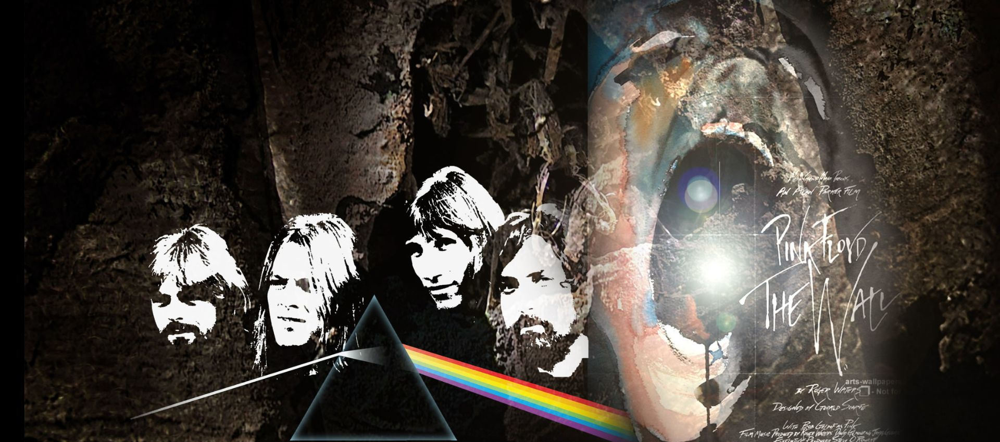
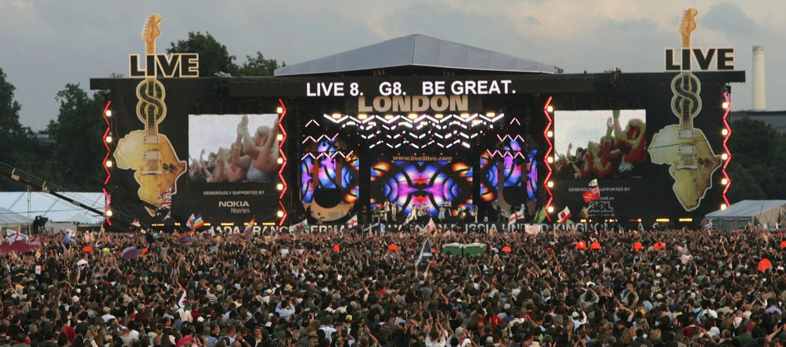

En medio de la reciente disputa entre Roger Waters y David Gilmour, Nick Mason -el baterista de Pink Floyd- volvió irrumpir como mediador entre los dos músicos y acaba de confesar que tiene ganas de reunir a la mítica banda y volver a contar con Waters en el bajo. Las declaraciones tuvieron lugar en una reciente entrevista con el medio británico The Sun y llegan justo después de que Waters regrabara el legendario álbum The Dark Side of the Moon sin el resto de la banda.
"De hecho, él [Roger] me envió una copia de aquello en lo que estaba trabajando y yo le contesté: '¡Vaya, es absolutamente brillante!", mencionó Mason sobre esta nueva versión del mítico LP. "No supone un spoiler del original en absoluto, es un añadido interesante a la cosa". Cuando al baterista le preguntaron si veía posible una reunión de Pink Floyd, dejó la puerta abierta para que pueda pasar en algún futuro. "Nunca se sabe lo que puede surgir. Estoy tentado de decir que estoy disponible para cualquier cosa".
En marzo, The Dark Side of The Moon cumplió 50 años desde su lanzamiento y es por ese motivo que repasamos una por una las canciones del icónico disco de la banda inglesa que los alzó a lo más alto del firmamento musical.

Resumen Noticia 1...

Resumen Noticia 2...

Resumen Noticia 3...

Resumen Noticia 4...